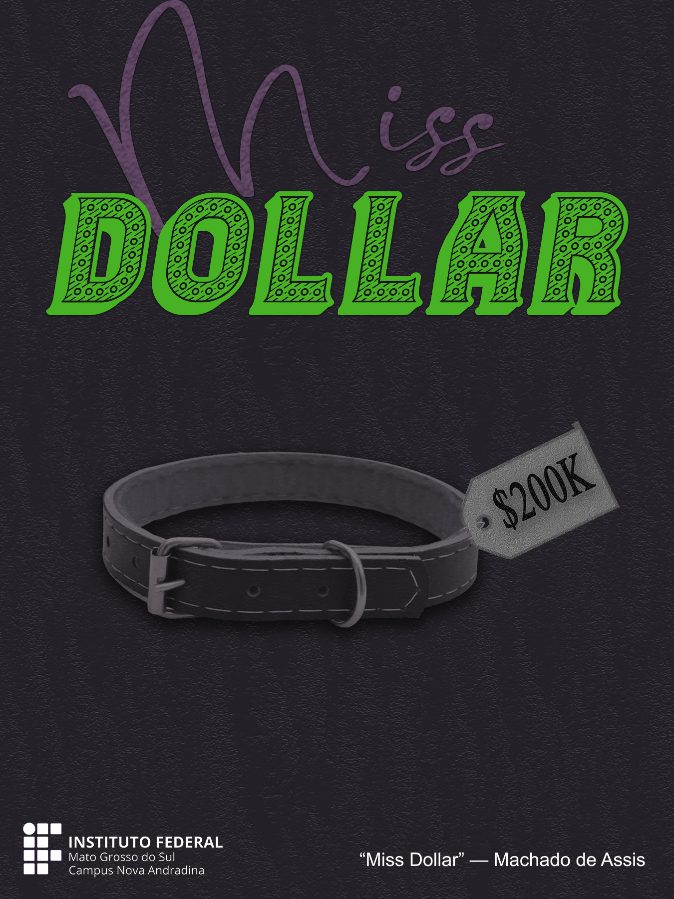

Caio Hygino Perlin de Lima
Releitura:
- Obra: Contos Fluminenses - Miss Dollar, 1870
- Autor: Machado de Assis
- Tipo: Simbolismo
- Estudante: Caio Hygino Perlin de Lima
Página feita por Caio Hygino Perlin de Lima | INFO 4A
Página feita por Caio Hygino Perlin de Lima | INFO 4A